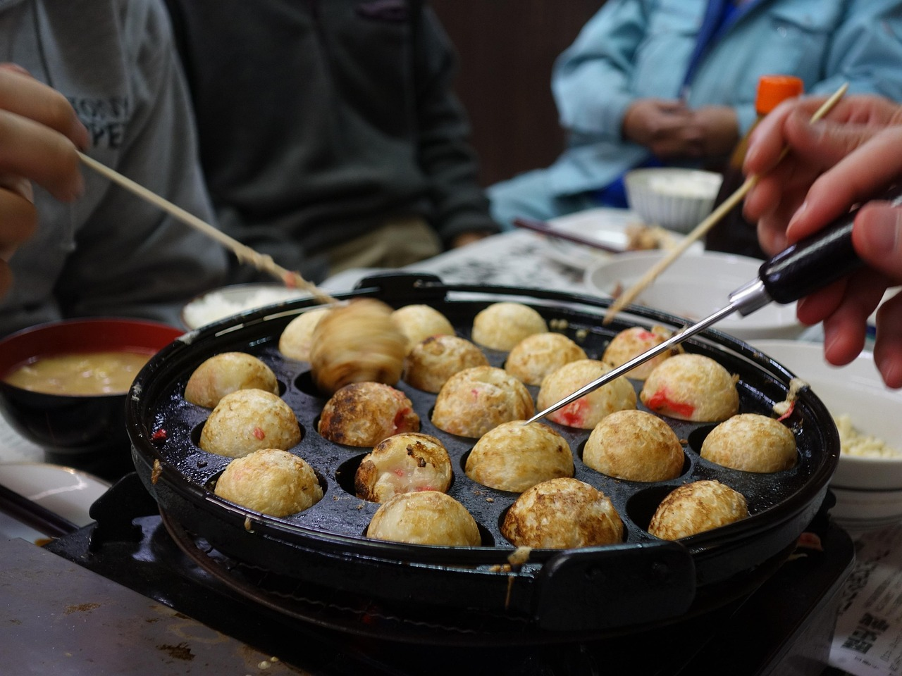
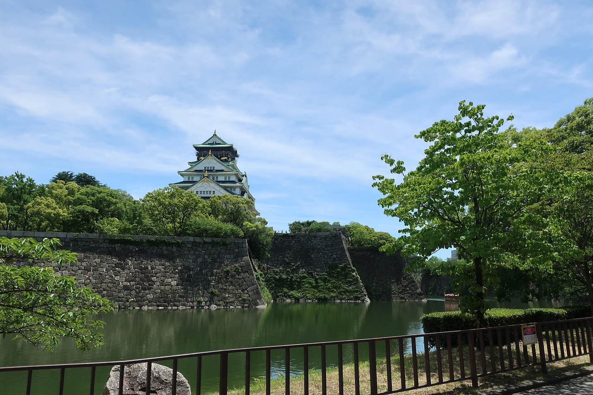

Informações
Osaka é a terceira maior cidade do Japão. Eis alguns dados essenciais sobre a cidade.
| Demografia | População | cerca de 2,75 milhões de hab. (Censo 2020) |
|---|---|---|
| Densidade populacional | cerca de 12 200 hab./km² | |
| Geografia | Área | cerca de 225 km² |
| Região | Kansai | |
| País | Japão | |
| Website | www.city.osaka.lg.jp | |
Curiosidades
- Osaka é conhecida como a «cozinha do Japão»: o takoyaki e o okonomiyaki são especialidades locais.
- O castelo de Osaka foi mandado construir por Toyotomi Hideyoshi em 1583; a torre principal atual é uma reconstrução de 1931.
- O templo Shitennoji, fundado em 593 pelo príncipe Shotoku, é um dos primeiros templos budistas do Japão.
- Nas escadas rolantes de Osaka as pessoas ficam do lado direito, ao contrário de Tóquio, onde ficam do lado esquerdo.
- Osaka recebeu duas Exposições Mundiais: a de 1970 e a de 2025, realizada na ilha artificial de Yumeshima.

